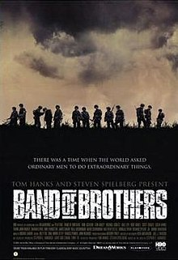

Merahba ben Önder Atakan Önder. 14 nisan 1997 yılında Kayseri'de doğdum. İnşaat mühendisliği mezunu bir mühendis olarak, web tasarımı konusundan kendimi geliştirmeye çalışıyorum. Üç boyulu yazıcılar, oyunlar ve teknoloji konusunda bilgi toplamayı ve incelemeyi seviyorum.
Bands of Brother
Dizinin ana konusu ABD ordusuna ait 101. Hava İndirme Tümeninin, II. Dnya Savaşında D Day çıkarmasına kadar hazırlanışı ve o günden sonra yaşanılan olayları yaşayan kişilerin anlatımları ile desstekleyerek izleyicilerin gözleri önüne sunan bir mini dizidir.
İmdb sayfası için;